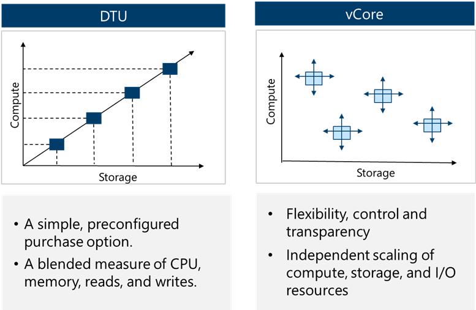
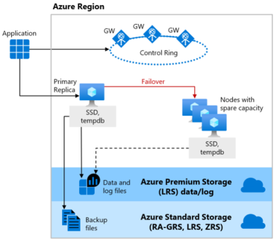
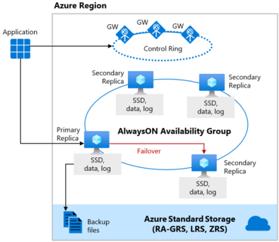
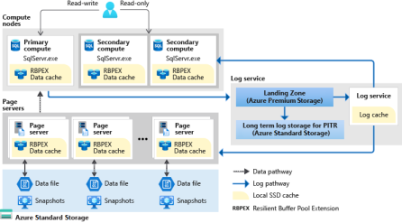

Relational DB (Azure SQL)
[!NOTE] AZ-305 Exam Focus: The exam tests selecting the appropriate Azure SQL deployment model (SQL DB vs. SQL MI vs. SQL on VM), purchasing & compute models (vCore vs. DTU, Serverless vs. Provisioned, Elastic Pools), high availability & disaster recovery (Failover Groups vs. Active Geo-Replication), backup retention (PITR vs. LTR), and security implementations (TDE, Always Encrypted, RLS, DDM, Ledger).
1. Deployment Models Decision Matrix
| Model | Scope & Architecture | Best For / Scenarios | Key Features & Limitations |
|---|---|---|---|
| Azure SQL Database | Database-scoped PaaS | Modern cloud-native apps, microservices, multi-tenant SaaS, intermittent workloads | • Fully managed, zero OS/instance overhead. • Supports Serverless & Elastic Pools. • No instance-scoped features (no native SQL Agent, no cross-database queries across servers without Elastic Query). |
| Azure SQL Managed Instance | Instance-scoped PaaS (nearly 100% surface-area compatibility) | Lift-and-shift of existing on-premises SQL Server with minimal application redesign | • Supports SQL Server Agent, cross-database queries/transactions, Linked Servers, Service Broker, and CLR. • Native .bak restore directly from Azure Blob Storage (RESTORE ... FROM URL).• Requires a dedicated, delegated subnet in a VNet. • Near-zero downtime migrations via Azure DMS (online), Managed Instance link, or Log Replay Service (LRS). • Limitations: No FileStream, no Simple Recovery model. |
| SQL Server on Azure Virtual Machines | IaaS (full OS & SQL control) | Legacy SQL versions (e.g., SQL 2008/2012 with free ESU), OS-level access, strict third-party software dependencies | • Full administrative control over VM and SQL instance. • Supports FileStream, Simple Recovery model, and co-located SSAS / SSRS / SSIS. • SQL Server IaaS Agent Extension enables automated patching, automated backups, and Azure Key Vault integration. • Customer is responsible for OS updates, patching, and high availability configuration. |
| Azure SQL Edge | Edge/IoT-optimized container | Low-latency streaming analytics on ARM64 and x64 edge devices | Built-in data streaming, time-series, and edge AI/graph analytics. |
2. Azure SQL Database: Purchasing & Compute Options

Purchasing Models
- vCore (Recommended):
- Independently configure and scale compute (vCores) and storage.
- Supports Azure Hybrid Benefit (AHB) (up to 55% discount using on-premises SQL licenses with Software Assurance).
- Supports Reserved Capacity (pre-pay for 1 or 3 years for steep discounts).
- DTU (Database Transaction Unit):
- Bundled compute, storage, and I/O resources in fixed tiers (Basic, Standard, Premium).
- Simpler, but lacks independent scaling, AHB, and Serverless options.
Compute Tiers (vCore)
- Provisioned Compute: Pre-allocates compute resources continuously billed per hour, whether used or not. Best for steady-state workloads.
- Serverless Compute:
- Automatically scales compute between configurable min and max vCores based on demand.
- Auto-pause & Auto-resume: Automatically pauses the database during configured periods of inactivity (e.g., 1 hour), only billing for storage. Wakes up automatically on the next connection.
- Billed per vCore-second. Ideal for intermittent, unpredictable, or dev/test workloads.
Elastic Database Pools
- Buy a shared budget of compute resources (eDTUs or vCore pool) and storage shared across multiple databases.
- AZ-305 Rule: Designed for multi-tenant SaaS patterns where multiple databases have variable and unpredictable peak usage at different times. It is NOT for vertical scaling of single databases; it optimizes cost across many databases.
3. Service Tiers & High Availability Architecture
| Feature | General Purpose (GP) | Business Critical (BC) | Hyperscale (HS) |
|---|---|---|---|
| Target Workload | Most standard business workloads | High IOPS, low latency OLTP | Very large databases (VLDB), rapid scale |
| Storage Architecture | Remote Azure Premium Blob Storage (compute & storage decoupled) | Local NVMe SSD storage | Separated multi-tier caching with Page Servers & Log Service |
| Max Database Size | 4 TB (up to 128 TB on GP Next Gen) | 4 TB | 128 TB |
| High Availability Architecture | Azure Service Fabric attaches a new stateless compute node to remote storage | Always On Availability Groups (4 replicas: 1 primary, 3 secondaries) with synchronous commit | Separated compute nodes + resilient distributed page servers |
| Failover Time | 1 – 2 minutes | Sub-second (fastest) | Rapid failover (seconds) |
| Read Scale-Out | Not supported | 1 free read-only replica (connect using ApplicationIntent=ReadOnly) |
Up to 30 named replicas |
| Backup / Restore Speed | Proportional to database size | Proportional to database size | Near-instantaneous (storage snapshots regardless of size) |
High Availability Architecture Diagrams



4. Disaster Recovery: Active Geo-Replication vs. Failover Groups
| Capability | Active Geo-Replication | Auto-Failover Groups (Failover Groups) |
|---|---|---|
| Supported Offerings | Azure SQL Database only | Azure SQL Database AND SQL Managed Instance |
| Replication Scope | Single database | Group of databases or entire Managed Instance |
| Target Secondary | Up to 4 readable secondaries across any Azure region | 1 secondary in a chosen paired/unpaired region |
| Failover Process | Manual only | Automatic (with configurable grace period) or Manual |
| Connection Strings | Must be reconfigured manually upon failover | No change needed; uses dedicated DNS listener endpoints (-primary and -secondary) |
| Read Scale-Out | Secondaries are readable | Secondary can be used as a read-only endpoint |
5. Backups & Business Continuity
- Automated Backups:
- Full backups: Weekly.
- Differential backups: Every 12–24 hours.
- Transaction log backups: Every 5–10 minutes.
- Point-in-Time Restore (PITR):
- Restores a database to any point in time within the retention window.
- Default: 7 days (configurable from 1 to 35 days).
- Long-Term Retention (LTR):
- Stores full backups for regulatory compliance for up to 10 years using Azure Backup vault policies (W-M-Y: Weekly, Monthly, Yearly).
- Backup Storage Redundancy:
- Configurable independently of compute tier: LRS (local), ZRS (zone), GRS (geo-redundant, default), or GZRS.
6. Security, Encryption & Compliance
| Security Area | Technology | Implementation & Exam Details |
|---|---|---|
| Identity & Access | Microsoft Entra ID (Azure AD) | Centralized identity management. Enables MFA, Conditional Access, and passwordless authentication via Managed Identities. |
| Network Security | Private Link / Private Endpoint | Secures access over private IP within the VNet, blocking public internet exposure. |
| Data at Rest | Transparent Data Encryption (TDE) | Encrypts database files, log files, and backups at rest using AES-256. Can use Service-Managed Keys or Customer-Managed Keys (BYOK via Azure Key Vault). |
| Data in Transit | TLS 1.2+ | Enforces transport layer encryption between client applications and Azure SQL. |
| Data in Use / Process | Always Encrypted | Client driver encrypts sensitive columns before transmitting to database. Database processes ciphertext and never accesses plaintext. With Secure Enclaves, cryptographic operations (like equality/range queries) can occur inside hardware enclaves. |
| Data in Use Encryption Types | Deterministic vs. Randomized | • Deterministic: Always yields the same ciphertext for a given plaintext value; allows point lookups, joins, grouping, and indexing. • Randomized: Generates different ciphertext for identical plaintext; more secure, but prevents searching, grouping, and indexing. |
| Presentation Layer | Dynamic Data Masking (DDM) | NOT encryption. Obfuscates sensitive data in query results (e.g. XXXX-XXXX-XXXX-1234 or custom masks) on the fly for non-privileged users without altering underlying data. |
| Access Control | Row-Level Security (RLS) | Uses SQL predicate functions to restrict which rows a user can see based on user identity or role (e.g., tenants can only access rows matching their TenantID). |
| Audit & Integrity | Ledger for Azure SQL | Provides cryptographic proof of data integrity using SHA-256 block hashing (tamper-evident tables and ledgers). Protects against unauthorized modifications even by high-privileged DBAs. |
| Threat Protection | Microsoft Defender for SQL | Vulnerability assessments, anomalous activity detection, and SQL injection alerting. |
Recovery
Please see this note
- Always On availability groups: Primary VM sends copies of all committed transactions to at least one replica in the availability group. synchronous commit replication ensures zero data loss for synchronous replicas.
- Always On Failover Cluster Instance: uses Windows Server Failover Clustering (WSFC) to provide high availability for SQL Server instances. If the primary instance fails, a secondary instance automatically takes over.
- Multi-Region or Hybrid Always On availability groups: If the primary site fails, you can fail over to a secondary Availability Group in a different location, either within Azure or on-premises.
- Distributed availability groups: Provides high availability for SQL Server instances across multiple availability groups.
- Log shipping: Copy transaction log backups from a primary SQL Server to one or more secondary SQL Servers. The transaction log backups are restored on the secondary server, keeping it synchronized with the primary server.